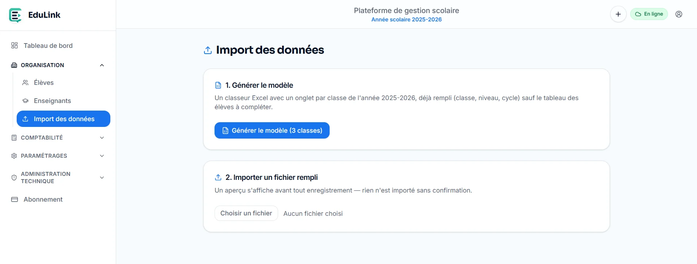

Application web · en ligne
Edulink
Plateforme de gestion scolaire
Une application React pour gérer une école : inscriptions, élèves et enseignants, paiements et comptabilité, abonnements. On peut importer les élèves depuis un modèle Excel généré par classe, avec un aperçu avant de valider.
edulinkguinee.com ↗